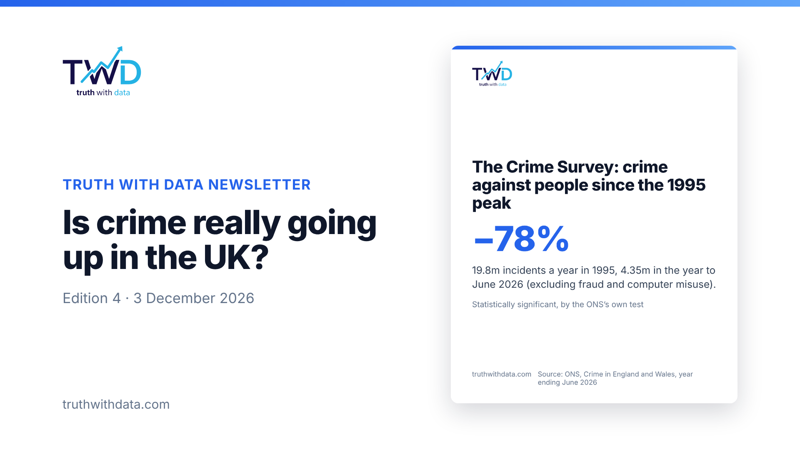

Title: Is crime really going up in the UK? Two official measures, two stories
Cover image (download, then upload as the edition's cover): 
Body: select everything inside the dashed box below, copy, and paste into the LinkedIn editor under the title. Headings, bold and links carry over.
SEO title (Publishing menu → SEO): Is crime going up in the UK? What the official data shows
SEO description: The Crime Survey shows crime in England and Wales down 78% since 1995; police records are up 50% since 2014. Why both are right, and what is rising.
Text for the post that goes out with it (the box LinkedIn shows when you press Publish):
79% of adults in England and Wales told the ONS that crime had gone up across the country. The Crime Survey says crime against people is down 78% since 1995. Police records say it is up 50% since 2013/14.
This week's edition explains how all three can be true at once, and which crimes really are rising.
Every week this newsletter takes one question people argue about and answers it with public data, with the method shown. This week: is crime really going up in the UK?
"Crime is out of control" is one of the most common claims in British politics and on social media, and most people agree with it: in the latest ONS figures on the question, 79% of adults said crime had gone up across the country in the past few years. Yet the country's largest and longest-running measure of crime says the opposite. And the police figures, the ones in most headlines, really are higher than ten years ago.
England and Wales measure crime in two official ways, and the ONS publishes both every three months. The Crime Survey asks a random sample of about 31,000 adults a year whether they have been a victim, whether or not they told the police. Police recorded crime counts what the 43 forces and the British Transport Police record. I downloaded both back to 1981 and compared their trends, offence by offence, using the ONS's own significance tests. The figures cover England and Wales only: Scotland and Northern Ireland count crime differently.
The survey shows a long fall. It estimated 19.8 million incidents at the 1995 peak and 4.35 million in the year to June 2026 (excluding fraud and computer misuse), 78% fewer. Violence is down 79% since 1995, burglary of homes 84% and vehicle theft 86%.
Police records rose because recording changed. Police recorded crime has risen 50% since its 2013/14 low, from 3.51 million to 5.25 million offences. In 2014 inspectors found that about 19% of crimes reported to police were not being recorded, and forces tightened up. Violence, public order and sexual offences account for more than the whole rise since; recorded stalking and harassment alone went from 62,656 to 622,662. Burglary, which victims report because insurers need a crime number, halved in police records.
A few crimes really are rising. Fraud is up 34% since 2016/17 in the survey, and theft from outside homes, including parcels, is up 42%. Both rises are statistically significant. Shoplifting recorded by police is up 40%, partly because retailers report more.
The local picture is calmer than the national one. 79% said crime had risen across the country, but only 51% said so about their own area. People judge the country from the news and their area from experience.
For most crimes against people, Britain is far safer than in the 1990s. The police figures are the better guide for rare, serious crimes: police recorded 492 homicides in the year to March 2026, the lowest annual count in the series that starts in 2002/03. But "crime" isn't one thing. Fraud now touches far more people than violence, and only a small share of it is reported to the police, so police figures say little about it.
The two measures don't cover the same offences, so I compare trends, never levels. The survey leaves out crimes against businesses, homicide and people living in care homes or halls. There are no comparable survey estimates for 2020/21 and 2021/22, and many one-year changes in smaller categories are within the survey's margin of error. Local figures can only come from police records, so they carry all the recording caveats.
The article has every offence compared, the data and the Python and R code. The free lookup shows police recorded crime per 1,000 residents for every police force and about 300 council areas in England and Wales.
Read the analysis · Look up your area
The code (Python and R) is public: github.com/truthwithdata/analysis
Want one chart a week in your inbox, every Sunday? Sign up at truthwithdata.com. It's free.
Vishal